Ownership before rescue.
Each team needs room to make decisions, test them, and learn from the result. My role is to unblock the process, not take the work back the moment it becomes difficult.
Running a robotics club taught me the opposite. The club became stronger when I stopped trying to be the answer to every problem and started building a system where more people could own the work.
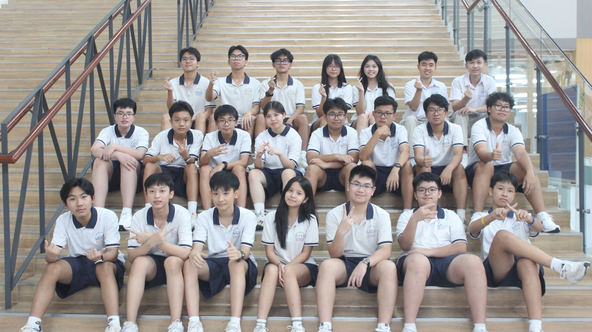
When something was late, my instinct was to take it back. When a mechanism failed, I wanted to fix it myself. When a plan felt unclear, I rewrote it.
That approach could rescue one deadline, but it created a bigger problem: people started depending on the leader instead of the process. The more I tried to hold together, the less ownership could spread.
With multiple teams sharing a room, tools, practice time, code, CAD, and competition deadlines, that weakness became impossible to ignore. Robotics made the lesson physical: a system with one critical point of failure is not robust.
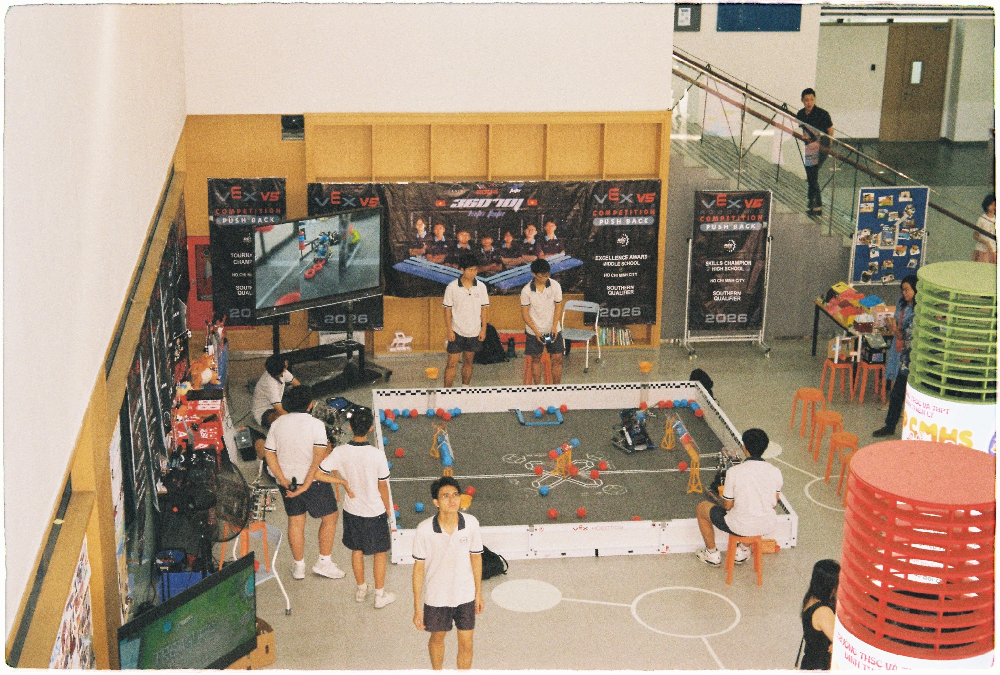
I began treating the club the way I would treat an engineering system: define ownership, expose problems early, document why decisions changed, and create feedback loops that other people could use without waiting for me.
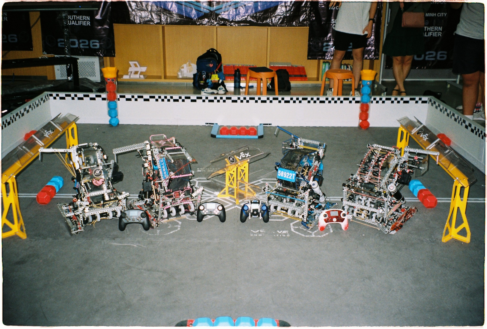
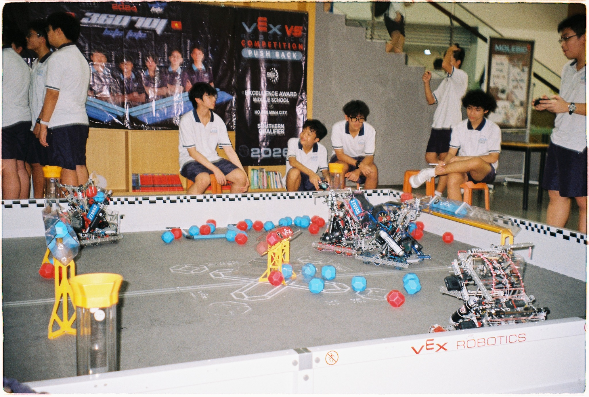
Each team needs room to make decisions, test them, and learn from the result. My role is to unblock the process, not take the work back the moment it becomes difficult.
A robot version is more useful when members understand why it changed. CAD, sensor choices, mechanisms, and rebuilds should have a history people can explain — not just copy.
A jam, missed route, overheated motor, or bad test is not one person’s embarrassment. It is information the next version of the whole club can use.
The strongest technical member is not the one who keeps the most knowledge. It is the one who can make another person confident enough to use it.
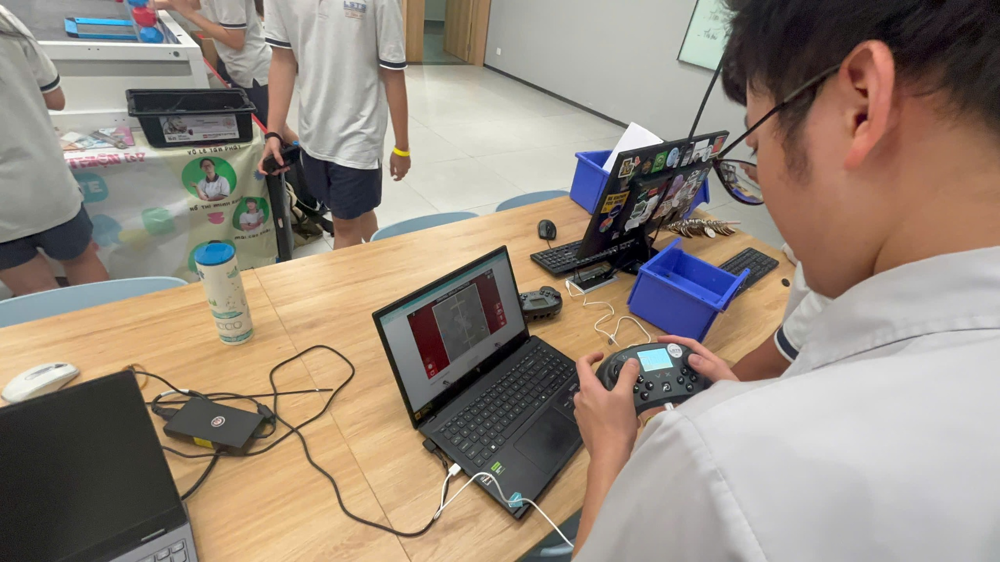
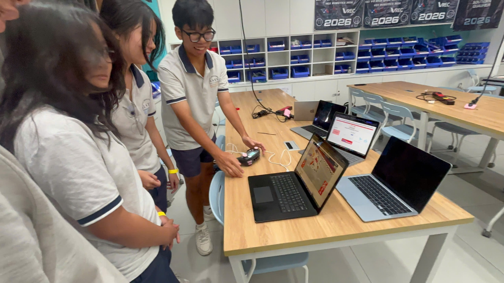
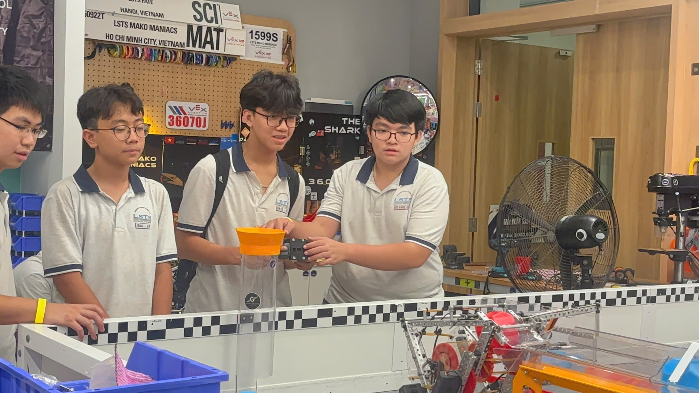
Competition can make a robot look finished from the outside. Club demos do the opposite: people see the messy mechanisms, take a controller, ask basic questions, and discover that robotics is something they can learn — not just something they watch.
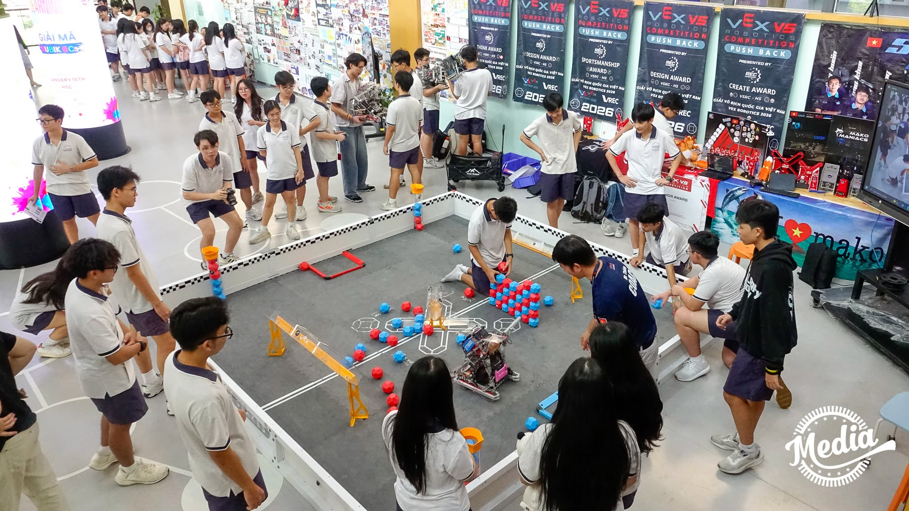
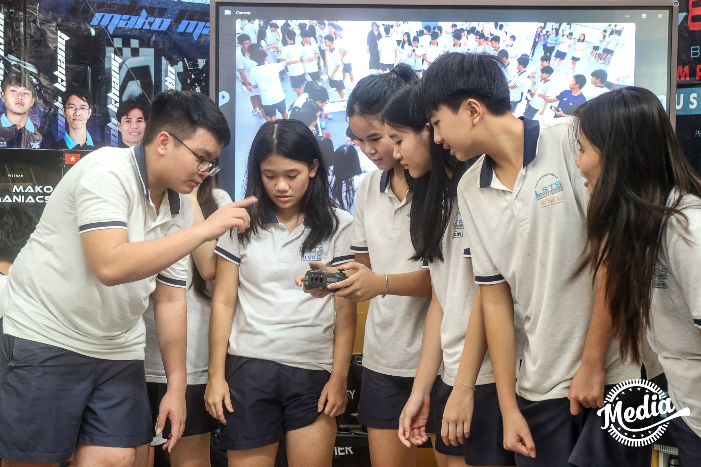
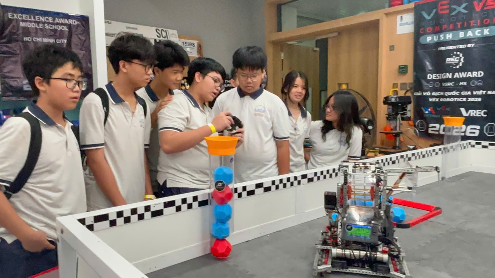
I still care about building fast, competing well, and solving hard technical problems. But leadership added another question: will this still work when I step away?
That question changed how I delegate, document, teach, and listen. The goal is no longer to be the person everyone needs. It is to help build a club where more people know what to do next — and feel that the robot is theirs to improve.
“The best sign that I led well is not that I solved every problem. It is that the team can keep solving problems without waiting for me.”
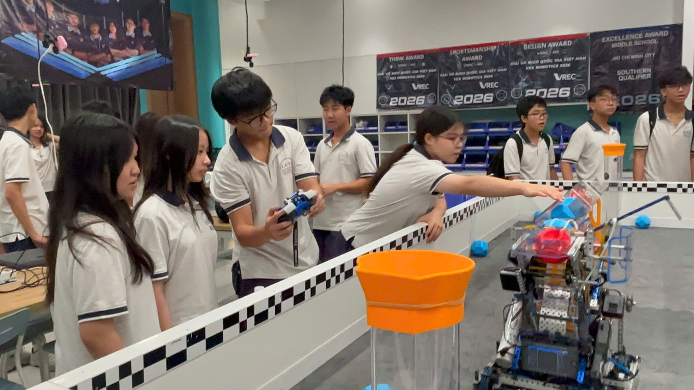